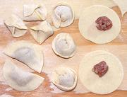

(click to enlarge)
Pelmeni - Siberian Dumplings
Russia / Siberia - Pelmeni
Effort:
Sched:
DoAhead:
****
3-1/2 hrs
Yes
|
Pelmeni - Siberian DumplingsRussia / Siberia - Pelmeni | ||||
| Makes: Effort: Sched: DoAhead: |
150 **** 3-1/2 hrs Yes |
These dumplings were traditionally made by the thousands in Siberia and buried in the snow to keep frozen during the winter. Today they are a wildly popular all over Russia | |||
| In Russia, Pelmeni are both made at home and served by specialist dumpling restaurants. Siberian Pelmeni are made with a mix of two or three meats. In Perm Krai, just west of Siberia, pelmeni made with turnip and mushroom are popular. | |||||
|
3 2/3 1 1 |
c t lrg c |
Flour (1) Salt Egg Water, cold |
Dough- (15 min + 30 min rest)The amounts given here will be sufficient for about 160 pelmeni, 120 if you don't recondition the offcuts and make a 4th ball.
Flour:Unbleached flour is preferred for a denser, stronger dough. |
|
1 ar |
|
Egg White Flour |
Assembly and Forming- (120 pelmeni: 3 hours including set-up and take-down)(Click on Image for Larger View)  In Russia today, many people use a Pelmennitsa (pelmeni mold) to save a lot of time. It is similar to a Ravioli Mold, but honeycomb shaped rather than square. Commercially, Pelmeni are made using complex pasta machines imported from Italy. Here we make them the traditional way. Exact time will depend on your dexterity and how fast you work. The photo shows half moon (varenyky), envelope, and flying saucer folds. I do all the work on a 2-1/2 foot square sheet of plywood,
lightly varnished on the working side. You will also need a
Rolling Pin, preferably
the French tapered kind, a 2-1/4 to 2-1/2 inch cookie cutter, an
18 x 13 inch rimmed baking sheet, and, hopefully a
Piping Bag (pastry bag)
with a 1/2 inch plain round nozzle.
|
|
a/r a/r |
|
Water Salt |
Cooking- (8 min / batch)
|
Pelmeni are served various way, but most commonly tumbled with Butter. They can also be fried lightly brown in butter - not traditional but often done today. I particularly recommend this for vegetarian versions which need a little bump in flavor.
Condiments on the side may include Vinegar, Sour Cream, a mix of Sour Cream and Vinegar, and Lemon Juice. In the Russians Far East, Soy Sauce is often provided, and also in Australia since most Russians there came through China or the Far East.
See Photo for one of my favorite servings - but it's not quite 100% authentic. The Pelmeni are very lightly fried in butter, then served over a bed of Frozen Peas and Onions, also lightly fried in Butter. It is all garnished with chopped Dill and Parsley. Although some Russians may have served Pelmeni with peas (I don't know for sure), and all the rest of the ingredients are authentic enough - in Russia it would be Canned Peas - just like here during the Eisenhower Administration.
Lemon Juice goes very well with this serving, but provide lemon as wedges. If you mix lemon juice into the peas they will soon become the same Army olive drab color as real Soviet canned peas (although they will still taste better).
Serving Pelmeni with peas is not only delicious, it's a very good idea for buffet service. Mixing them into a pile of peas discourages a few greedy people from just scooping up all the Pelmeni and leaving none for others.
The amount of fillings here will be sufficient for the amount of dough given above, divided into three balls, plus a 4th ball formed from the leftovers from cutting the circles. Actually, my freezer compartment is so jammed it can hold only one baking sheet with about 120 pelmeni made from three balls, so I form the left over filling into patties and fry them.
|
8
8 8 2/3 1/3 |
oz
oz oz t t |
Beef, ground
Pork, ground Onions Salt Pepper |
Meat Filling- (30 min, grinding your own meats)Note that the meats should be a little fatty, and they should be ground or chopped fine, but not to mush. Persons who have tried to replace pork with other meats report inferior pelmeni, though lamb probably works much better than turkey, and is sometimes used.
|
|
10
13 8 1/2 2/3 1/3 |
oz
oz oz T t t |
Turnip
Mushrooms (2) Onion Oil Salt Pepper |
Perm Filling - Vegetarian- (50 minutes + cooking time for Turnip)Perm, administrative center of the Krai of Perm, is just outside the western edge of Siberia. While meat Pelmeni are certainly eaten in Perm, vegetable fillings are also popular there. All I've been able to find is that Turnips and Mushrooms are used, no other details, so I've used both in this recipe. The amounts given here will make about 140 pelmeni.
Mushrooms:Regular white mushrooms will work here, but I prefer at least half the small king trumpets now easily available here in Southern California. Also, a couple of fresh Shiitakes would help intensify the flavor. In Russia, dried mushrooms, usually Porcini, are often used, but those are not so commonly available in North America, and take a few hours of soaking and an hour simmering to prepare them.Serving:After cooking these in boiling water, I recommend frying them lightly browned in butter, as they could use a little flavor boost to compete with meat pelmeni. |